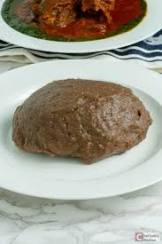

Home
Amala
Ingredients:
- 2 cups yam flour (elubo)
- 4 cups water
- Pinch of salt (optional)
Instructions:
- Boil the water: In a large pot, bring 4 cups of water to a boil. You can add a pinch of salt if desired.
- Add the yam flour: Once the water is boiling, reduce the heat to medium and gradually add the yam flour while stirring continuously with a wooden spoon or spatula to prevent lumps from forming.
- Cook the amala: Continue to stir the mixture vigorously as it thickens. Cook for about 5-7 minutes until the amala is smooth, thick, and stretchy. If it becomes too thick, you can add a little more water to reach your desired consistency.
- Shape and serve: Once cooked, scoop the amala onto a plate and shape it into a mound using the back of a spoon. Serve hot with your favorite soup or stew, such as ewedu, gbegiri, or egusi soup.
